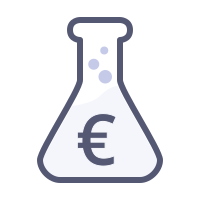
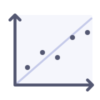
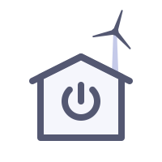

About Me
I am a Post-doc at BETA - Bureau d'Economie Théorique et Appliquée at the Université de Lorraine, France. I'm currently part of the ULHyS Project in which I am applying a choice experiment to determine consumers' preferences for hydrogen energy storage as a way to integrate more renwable energies into the grid.
My research interests lie in using methods from behavioural and experimental economics to encourage greener practices at a time when the world is transitiiong to a more sustainable way of life. I have predominately explored the demand side through my PhD research and present appointment. I am looking forward to applying my competences and methods to investigate how changing consumer practices affect the supply side of the market and firms' strategies.
Research Interests
-

Experimental Economics
-
Consumer Behaviour
-

Econometrics
-

Energy Consumption
On My Thesis
Household electricity consumption behaviour:
A meta-analysis and experimental approaches.
Supervised by
Daniel Llerena
and
Cédric Clastres.
I explore and analyse household and consumers’ preferences and behaviour with regard to their use of smart meters and dynamic pricing for managing their electricity consumption.
In particular, I look at how consumers behave and adapt in response to the different incentives that can be delivered via a smart meter, with the goal of making residential energy demand more flexible. This is done through an empirical analysis of the existing experimental literature, and via laboratory experiments to investigate consumer choices and behaviour in controlled settings.
Education
- Present
-
PhD
Household electricity consumption behaviour:
A meta-analysis and experimental approaches. - 2015
-
Master
Economics and Statistics
- 2014
-
Master
Management
- 2011
-
Bachelor
Economics and French
Communications
2019
- Jul - BETA Nancy (invited speaker)
- May - Sciences Po Grenoble
2018
- Nov - FAEE Paris (invited speaker)
- Sep - University of Kent Canterbury (invited speaker)
- Sep - BIEE Oxford
- Jun - WCERE Gothenburg
- Jun - IAEE Groningen
- Mar - Université Grenoble Alpes
- Jan - University of St Gallen
2017
- Nov - AIEE Rome
- Nov - FAEE Paris
- Mar - Université Grenoble Alpes
2016
- May - Grenoble Applied Economics Laboratory